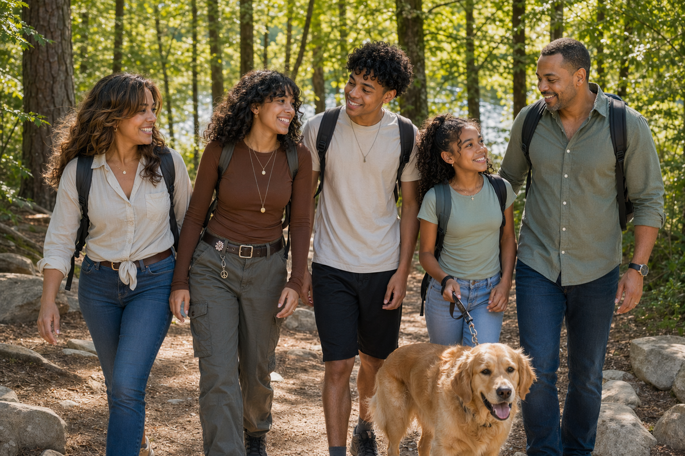
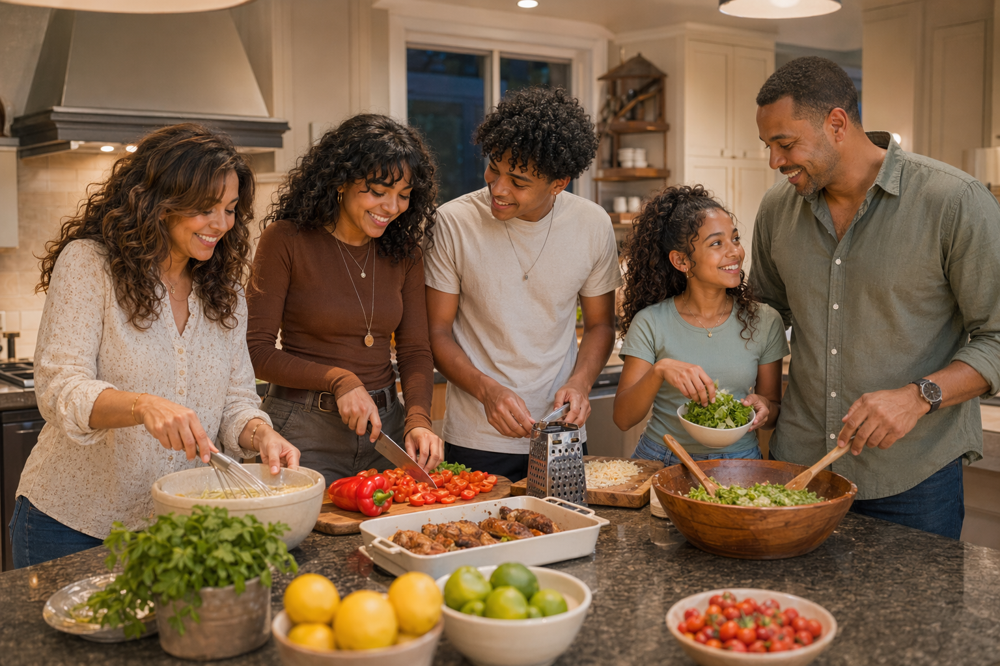
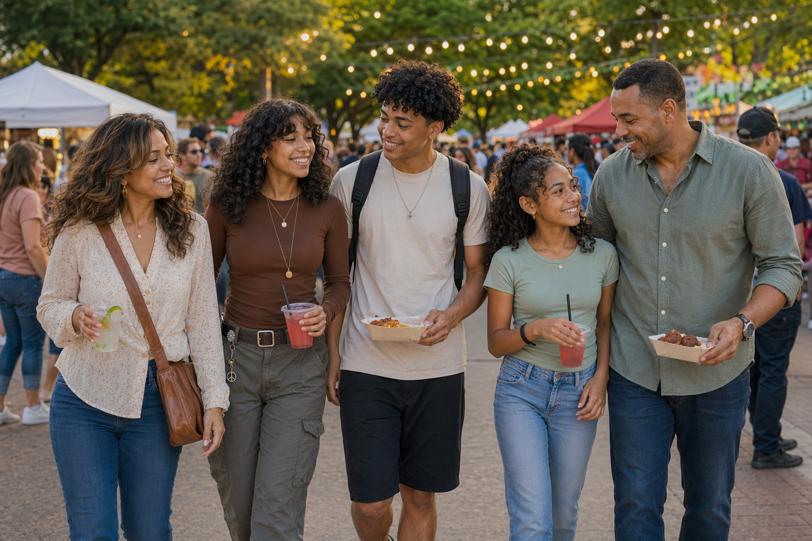
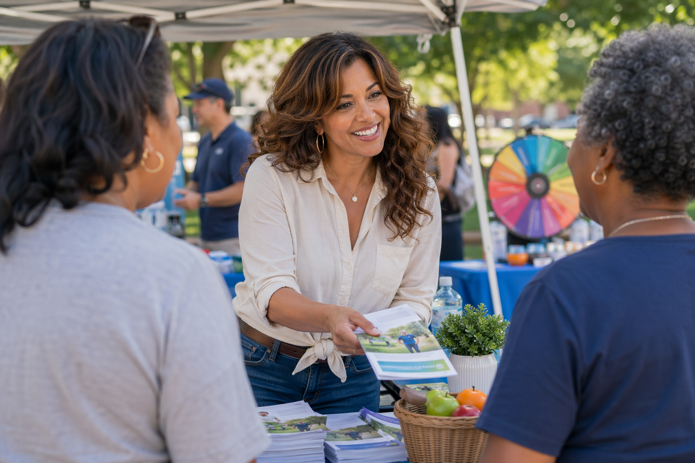
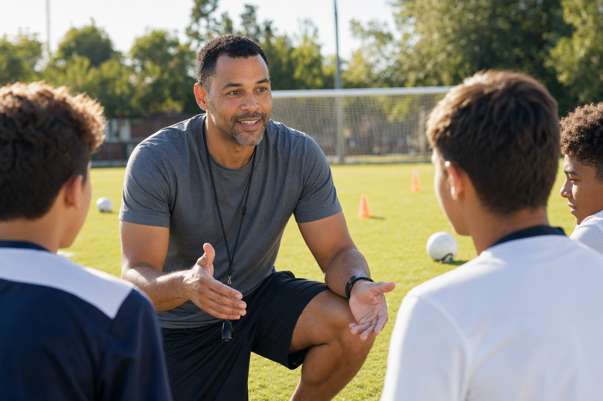
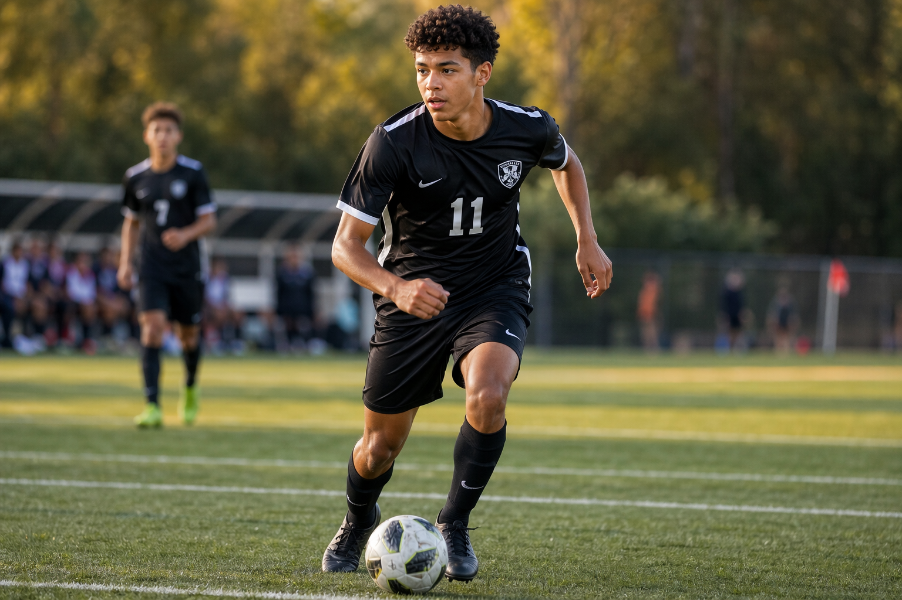
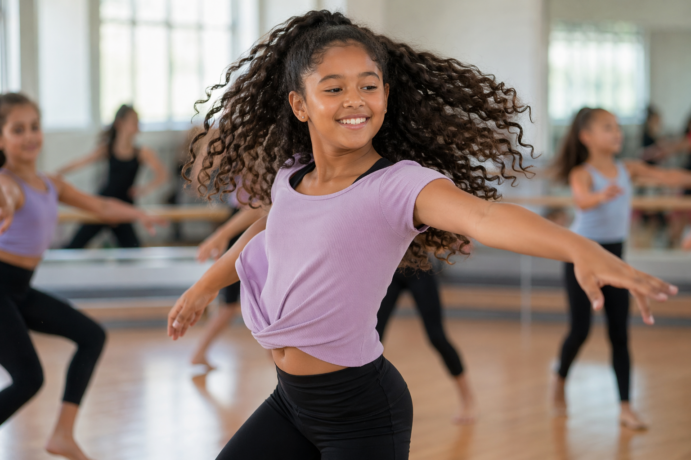

Trail Days
The family likes weekend hikes and day trips with their dog, Sol.
Family Web Page
A modern family of five from Charlotte with Puerto Rican, African American, Irish American, and long-time Southern American roots. They stay busy with sports, school clubs, creative work, travel, and community events.

A close family that loves outdoor trips, game days, creative work, and celebrating a blend of Puerto Rican and deeply rooted American family traditions.

The family likes weekend hikes and day trips with their dog, Sol.

They make Puerto Rican dishes, barbecue favorites, and family desserts together.

They love festivals, school events, and neighborhood gatherings.
Meet The Family

Pediatric nurse practitioner
Sofia is a first-generation Puerto Rican American who leads with warmth, structure, and a lot of energy. She helps with community health events and keeps the whole family connected.

Civil engineer
Daniel comes from a multi-generation American family with African American and Irish American roots. He coaches youth soccer and loves building family road trips around outdoor adventures.


College student in digital media
Leila studies digital media, films campus events, and is usually the one documenting family trips with photos and video.

High school junior
Mateo balances varsity soccer, robotics, and school leadership. He is competitive, smart, and always ready to head outside.


Middle school student
Nadia loves dance, science projects, climbing, and trying whatever activity the rest of the family is doing next.

Their last big trip was an eight-day family vacation to Costa Rica. They went zip-lining, hiking, kayaking, visited a wildlife rescue center, and took a cooking class together.
Together
Weekend hiking trip
Cooking together at home
Neighborhood festival day
This page includes a family of five, both parents' occupations, activities for all three children, a family pet, and their last vacation, with visuals and separate sections for each family member.